制作流程 · 2026.11.01–11.02
一支 20.5 秒像素风日文歌 MV 的重做。音乐、切点、动作节奏都从原片逐帧量出来照做，人物换成奶绿，表情改成「无口萌」：脸几乎不动，心情全靠小动作露出来。
成片。声音是原曲音轨，点开再播放。
STEP 1
原片导出成 615 张图（30 fps × 20.5 s），然后一帧一帧量出下面这些：
一开始动作是凭感觉做的（轻微缩放加随机抖动），看样片就不对：原片的动是慢的，但每一下都很干脆，踩在拍子上。改成逐帧测量后才对上，之后每个动作都是先量再做。
| # | 时间 | 歌词 | 大意 | 奶绿在做什么 |
|---|---|---|---|---|
| 1 | 0.0–3.3 | 声を聴くだけで | 光是听到你的声音 | 捏着耳机，眼皮半垂。画面从脸慢慢往上摇到头顶 |
| 2 | 3.3–4.3 | 幸せ | 好幸福 | 脸不动，心形呆毛竖起来，踩着拍子弹两下 |
| 3 | 4.3–5.1 | 幸せ | 好幸福 | 胸前比心，表情还是淡淡的 |
| 4 | 5.1–5.5 | な | 眼睛特写 | |
| 5 | 5.5–5.9 | なの | 不露脸，两根食指在胸前对戳 | |
| 6 | 5.9–6.3 | なの! | 就是嘛！ | 长发在鼻子下交叉，把嘴挡住；腮红加深 |
| 7 | 6.3–6.8 | でもでも | 可是可是 | 文字卡 |
| 8 | 6.8–10.1 | Chu ×8 | 亲亲，一拍一声 | 左右交替：A 拍歪头无口，B 拍 chu 嘴 |
| 9 | 10.1–13.6 | 知らない感情で埋もれそう | 快被说不清的感情淹没了 | 正面，面无表情，偶尔眨眼 |
| 10 | 13.6–17.0 | Chu ×8 | 同上 | 同第 8 段 |
| 11 | 17.0–20.5 | こんなに臆病だっけ? | 我有这么胆小吗？ | 食指抵着下巴，嘴角往下撇，眨眼 |
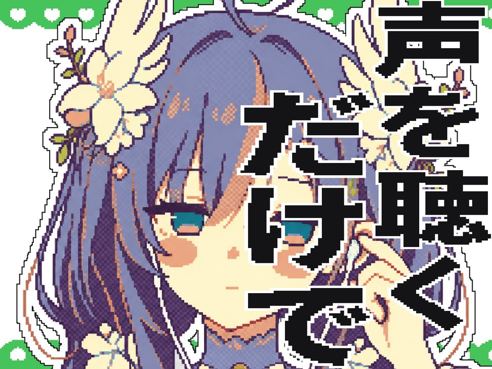
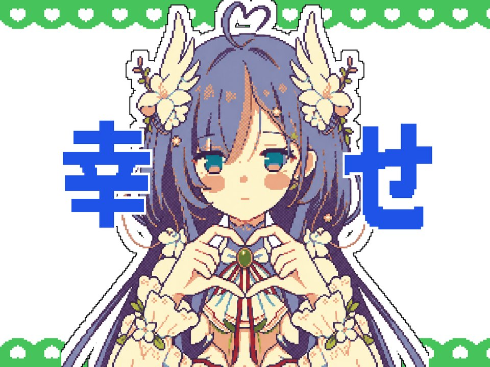
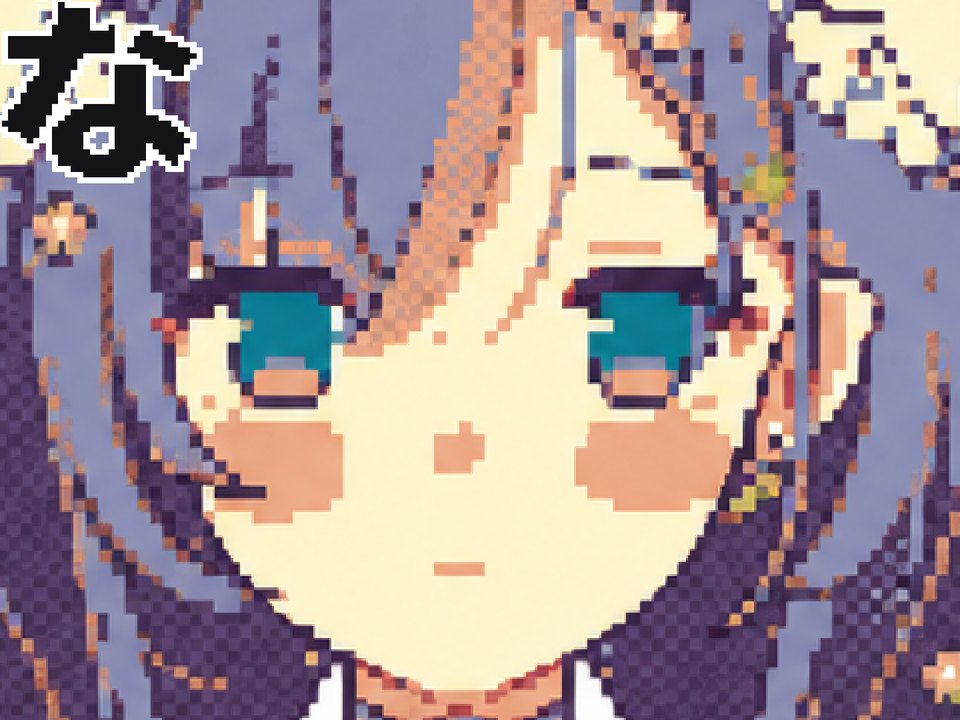
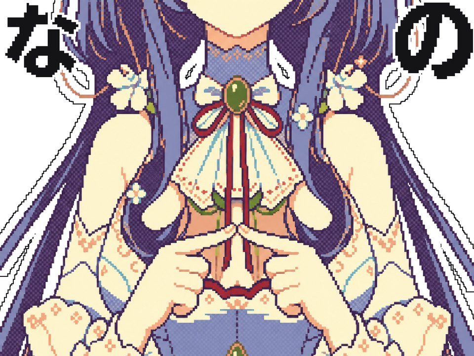
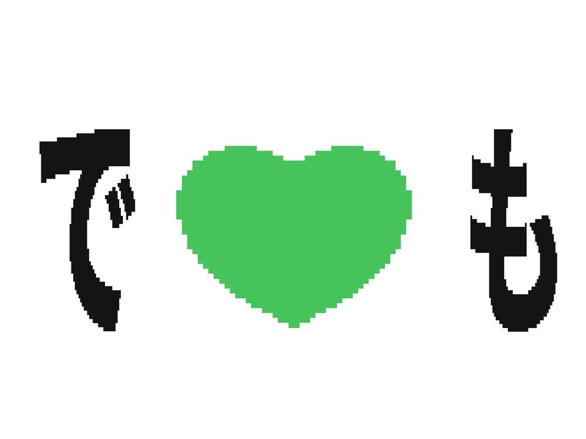
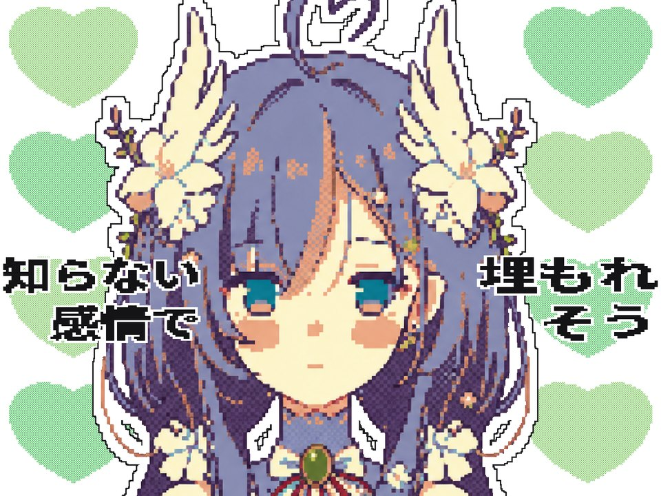
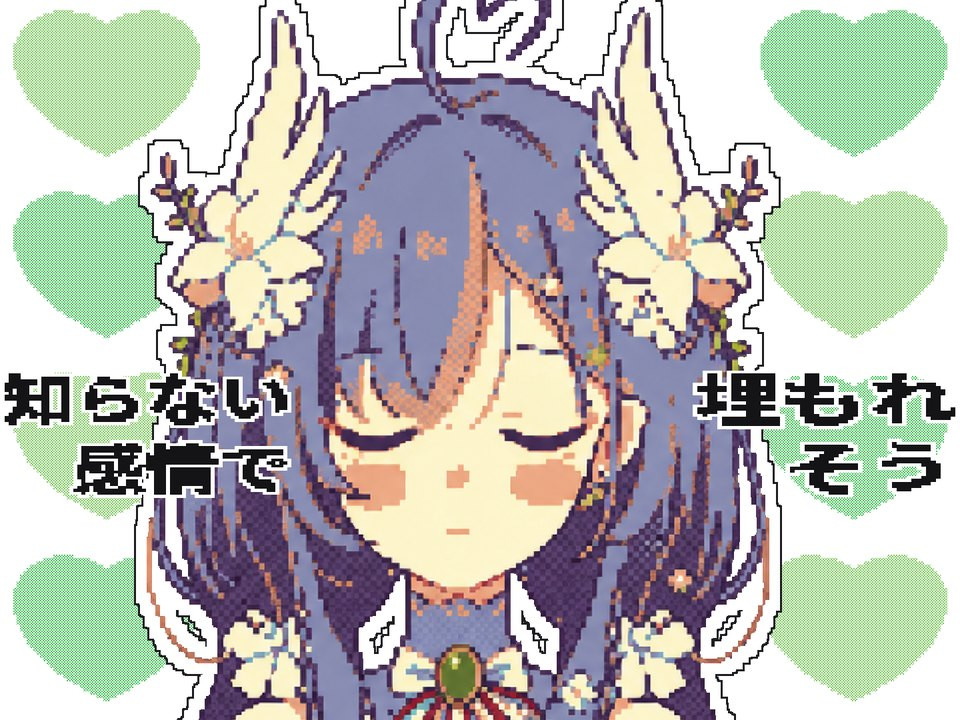
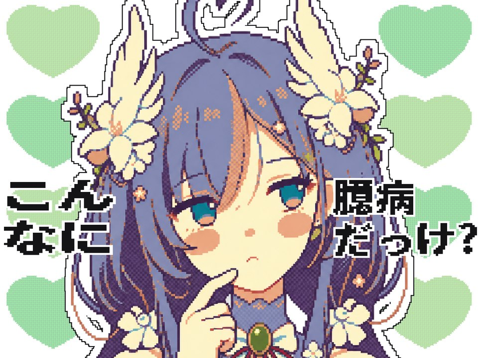
STEP 2
准备了两版奶绿的像素图，最后选了 gpt 直接出的这一版当主图。它是「假像素」：看着像像素画，格子其实不整齐，所以后面每张新图都要统一颗粒（见第 3 步）。Chu 段的 A 拍直接用了之前在 ChatGPT 里跑的一张歪头图。
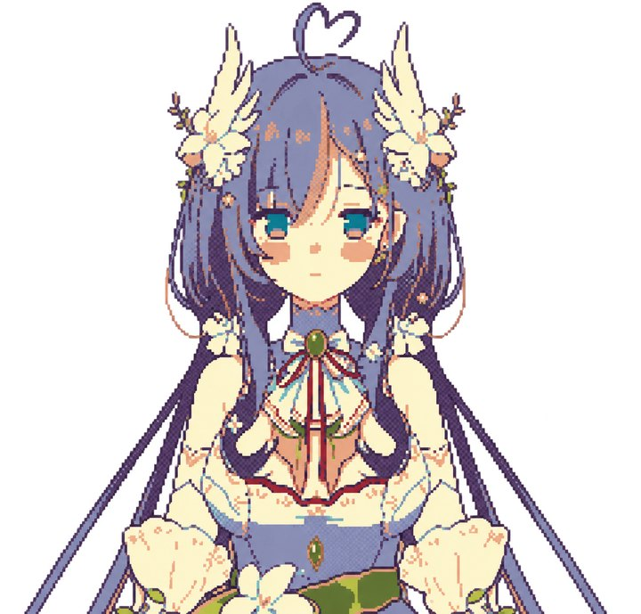
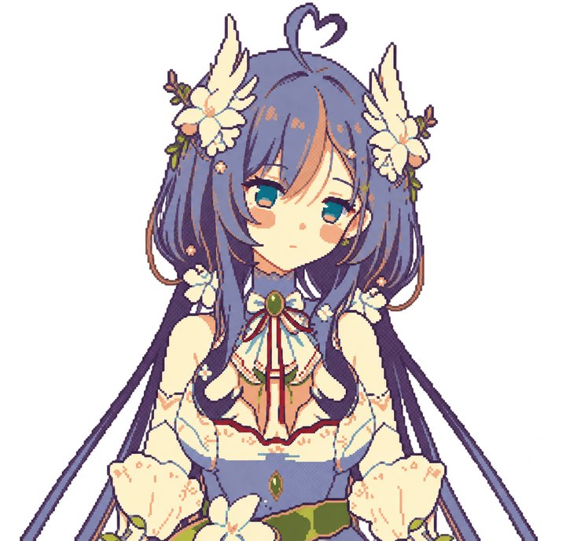
原片是红色系。这次改成白底加两种绿，相邻两颗心颜色错开；心和白色按 1:1 棋盘格混在一起，远看是浅绿。
正式出图之前，先拼一张正面镜头的完整画面：人物、贴纸白边、绿心、歌词都放上去，确认整体感觉再往下做。画幅照原片 4:3。
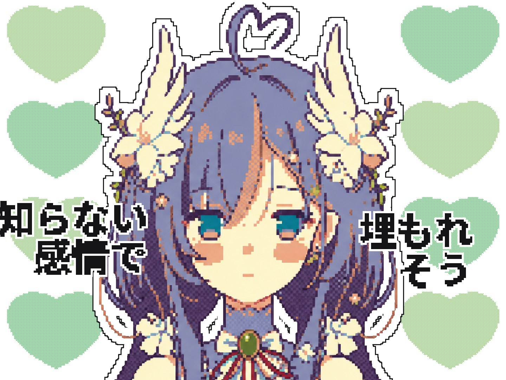
STEP 3
动作只要跟歌词搭得上就行，不照搬原片里男生的动作。奶绿是女孩子，原片那种捏领口的动作放到她身上很怪。整支片也只留了奶绿一个人：原本还有一个不露脸的第二角色，做到一半撤掉了，空出来的两个镜头换成了奶绿自己的呆毛特写和戳手指。
每个镜头一条英文提示词，结构都一样：
进片那 9 张图的完整提示词在文件夹的「提示词」里。
每条提示词一般一次出 3 张，挑 1 张进片。
gpt 每张图的「像素」大小都不太一样，一切镜头就看得出来。办法是按两眼间距把所有图缩放到同一个尺寸，再并排比颗粒，差太多的不用。成片里每张图的颗粒都在 5～7 px。
前后一共 6 批、48 张候选，进片 9 张，另外 1 张是自己之前跑的歪头图。
STEP 4
整张重跑会把已经满意的地方也一起变掉。颜色、眨眼、呆毛弹跳这些小地方，要么写代码改，要么只让模型重画遮罩里的一小块。
只改嘴那 116 个像素的颜色，形状不动。前后改了 6 版（粉红、上浅下深、全粉……），最后定成和腮红一样的颜色。
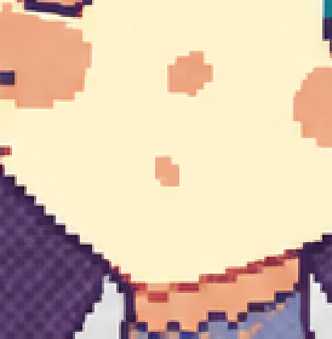
做一张遮罩只盖住两只眼睛，让模型只重画这一块；出来以后再按像素贴回原图（像素画不能羽化），别的地方一个像素都不变。
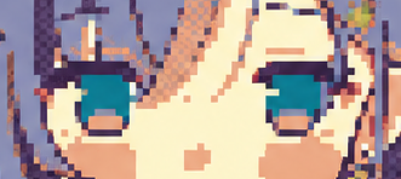
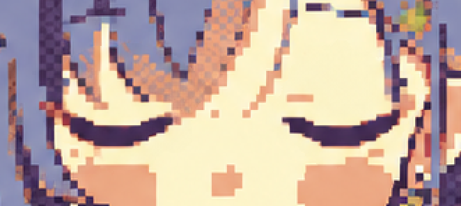
把心形呆毛那一块以根部为支点竖着拉伸：原样、拉长 1.15 倍、压扁 0.94 倍、回弹 1.05 倍、再回原样。第 2 个镜头里踩着两拍各弹一次。
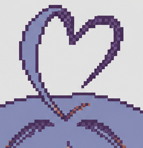
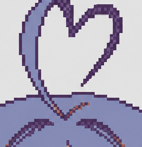
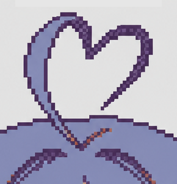
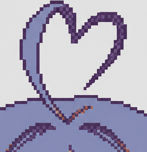
「なの!」那一下，腮红加深一档，再加上原片那种竖着的短线。
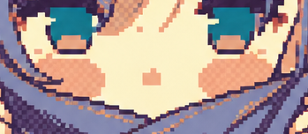
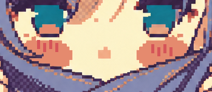
试过又删掉的：汗滴和眼泪（加上反而多余）；整帧的棋盘格「点点」抖动（人物变平，发梢冒出杂色点，先不加）。
STEP 5
615 帧全部用一个 Python 脚本画出来。每一帧按这个顺序叠：
抠图，加贴纸边。去掉灰底，外面描一圈 16 px 白边和一条细黑线，原片就是这种贴纸感。
摆位。按镜头表放进画面，以眼睛高度对齐。有三个镜头入场时人物先大一圈再回原大小（1.057、1.165、1.18 倍，都是量出来的）。
镜头里的动。只在约 12 fps 的格点上动，每次整格平移。Chu 段每一拍，人物斜着小跳一下再落回，大字往画面外侧滑。正面和最后一个镜头，人物每拍往下沉 2 格，背景的绿心 15 帧一个循环，在 6 个位置之间跳。
心跳。Chu 段每拍切点那 2～3 帧，后面的白色大心放大 1.03 倍，人物一动就缩回去。
转场。新镜头开头 2～3 帧做「洗白」。
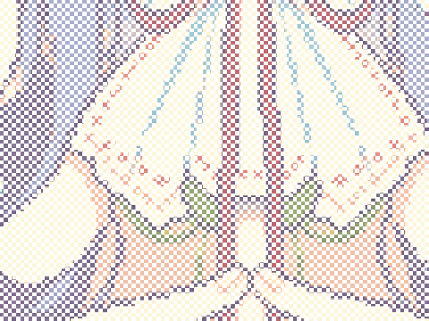
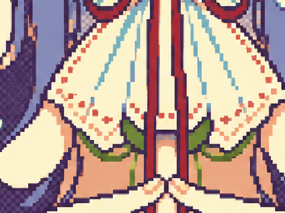
歌词。每一帧把我们的像素字缩放进原片同一句歌词的外框。这样原片字幕的动效（拉长再弹回、往中间靠、黑字变蓝）不用另外做，自动就有了。「!」下面那个点换成了小心心。
眨眼。原片在哪几帧闭眼，我们就在同样的帧换上闭眼图，一共 29 帧。
出片。615 帧拼成 30 fps 视频，原片音轨直接拷进去。整支片渲染一遍大约 1 分钟。
STEP 6
每出一版，都用量原片的同一套脚本去量成片，看对不对得上：
另外做了左右对照视频（左边原片，右边成片，同一条音轨），每改一版都逐段看一遍。
每条提示词一般一次出 3 张、挑 1 张，包里只放选定的图和它对应的提示词。成片用的是原曲音轨；原片画面和七海、星瞳的官方形象图没有收录。代码里的路径按原工程写死，直接运行要改路径（原片路径已换成占位），需要 Python（Pillow、NumPy、OpenCV）和 ffmpeg。